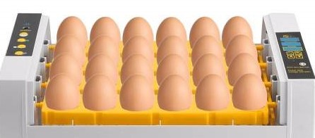
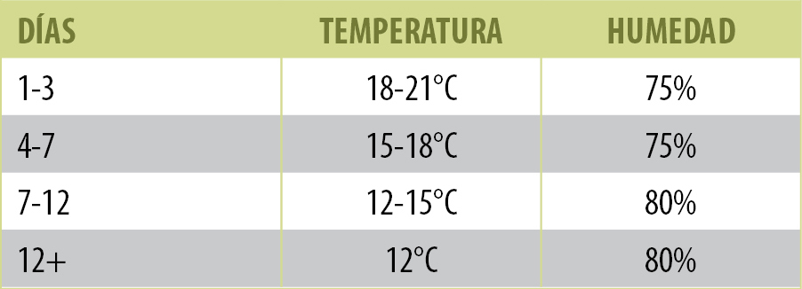

— archivado en: Producción Animal, Avicultura, Incubación, Huevo incubable
La incubación artificial, es la incubación de huevos mediante
máquinas incubadoras que brindan un medio ambiente adecuado y
controlado para que se desarrollen las crías de aves y reptiles.
A nivel comercial esta ampliamente difundido el uso de incubación
artificial para criar gallinas, pavos, patos y codornices.
El tamaño y tipo de la incubadora seleccionada depende de las
necesidades y de los planes futuros de cada productor. Hay muchos
modelos disponibles que son diferentes. Para ajustes continuos,
se recomiendan unidades separadas de incubadora y nacedora. Si
todos los huevos en la unidad están en la misma etapa de incubación,
se puede utilizar una sola unidad.
Las incubadoras caseras son cajas con capacidad que varía entre 6 a 75 huevos; por lo general son alimentadas eléctricamente, pero antiguamente eran calefaccionadas con una lámpara de aceite o parafina.
Una vez hecho el precalentamiento, se procederá a cargar las máquinas, que ya deben de estar atemperadas horas antes. Aquí, los huevos de gallina van a permanecer durante 18 días, momento en el cual se efectuará su transferencia a las nacedoras, donde estarán otros 3 días. Hay varios factores a tener en cuenta a la hora de cargar los huevos en las máquinas:
Carga Unica
Carga Escalonada
Las máquinas incubadoras pueden ser de dos tipos:
En las de carga única, todos los huevos se introducen al mismo tiempo, quedando totalmente vacías el día de la transferencia. Es decir, se aplica el sistema "todo dentro-todo fuera", pudiéndose limpiar perfectamente cuando quedan vacías.
En contraposición, las incubadoras de carga escalonada son máquinas de mayores dimensiones, en las que se van introduciendo cargas sucesivas de huevos, ocupándose el espacio que deja vacío una tanda transferida a las nacedoras con la siguiente. Estas máquinas no se vacían nunca, habiendo en ellas embriones en diferentes fases de desarrollo.
Además de los aspectos ya reseñados, los resultados de incubación dependen también de un conjunto de parámetros, entre los que podemos destacar los siguientes:
La temperatura de incubación de las especies domésticas se sitúa en un estrecho margen, entre los 37 y los 38ºC. Para las gallinas en concreto, la temperatura ideal de incubación es de 37,7 a 37,8ºC (Sauveur, 1988). También parece que el valor térmico ideal es diferente según se trate de incubadoras de carga continua o de carga única (todo dentro-todo fuera), puesto que en´estas últimas la temperatura se puede ajustar al valor adecuado al estado de desarrollo embrionario.
Temperatura Promedio
La humedad del espacio en el que se desarrolla la incubación requiere un riguroso control, en aras a obtener una óptima tasa de eclosión y un tamaño correcto del polluelo, ya que ambos parámetros están afectados por la pérdida de peso que sufre el huevo durante la incubación.
La humedad relativa durante el proceso de incubación debe situarse entre el 50 y el 55%
Para conseguir la humedad necesaria se suelen emplear o bien boquillas nebulizadoras o bien palas móviles. Las primeras operan reguladas mediante una válvula solenoide, aunque tienen el inconveniente de que pueden obturarse con aguas muy duras. De ahí que sean preferibles los sistemas basados en unas palas móviles, accionadas automáticamente y situadas sobre una cubeta llena de agua, la que proyectan en el interior de las máquinas cuando ello se requiere.
La ventilación es necesaria durante la incubación para proporcionar el oxígeno que el embrión va consumiendo y para eliminar el CO2, el vapor de agua y exceso de temperatura que se produce en su interior; además de lograr una correcta distribución del aire una vez llena la máquina y que todos los embriones alcancen la temperatura adecuada y, en consecuencia, también el aire tenga la misma HR en todo el volumen de la incubadora.
Durante la 1ª semana de incubación, el embrión es particularmente sensible a un incremento en la concentración de CO2 en la atmósfera de la incubadora. En general, esta proporción de CO2 no debe superar el 0,5%, admitiéndose hasta el 1% durante la eclosión. La falta de oxígeno también es crucial durante la última semana del desarrollo embrionario, provocando el agotamiento del embrión ya formado. El pollito muere si no puede romper la cáscara.
Partiendo de un contenido de O2 en el aire del 21%, el Cuadro 3 muestra los niveles adecuados de ventilación que se requieren, así como el CO2 expulsado por los embriones.
Cuadro 3. Intercambios gaseosos durante la incubación, por mil huevos (Martínez-Alesón, 2003)
| Día de incubación....... | 1 | 5 | 10 | 15 | 18 | 21 |
|---|---|---|---|---|---|---|
| Aire (m3/día) | 0.07 | 0.16 | 0.51 | 3.06 | 4.04 | 6.12 |
| CO2 (m3/día) | 0.008 | 0.016 | 0.054 | 0.325 | 0.436 | 0.651 |
Los huevos alcanzan sus condiciones óptimas de temperatura y humedad al cabo de muy poco tiempo de haber sido introducidas en la máquina.
Al estar permanentemente en funcionamiento, el consumo de energía es menor que con el funcionamiento más discontinuo (parar y arrancar) de las de carga única.
Ganancias de calor = Pérdidas de calor.
- Producida por los huevos, sistema de calefacción
- Porlas paredes,ventiladores, sistema de refrigeración
Miraje
En otro tiempo era práctica habitual, con el fin de detectar los huevos claros y los embriones muertos precozmente, efectuar un miraje el 5º día de incubación.
Iluminación de los huevos
Las experiencias llevadas a cabo con lámparas de incandescencia no deben ser tenidas en cuenta, porque en los efectos observados es prácticamente imposible separar la parte atribuible a la iluminación en sí y la que es consecuencia del aporte de calorías por las lámparas.